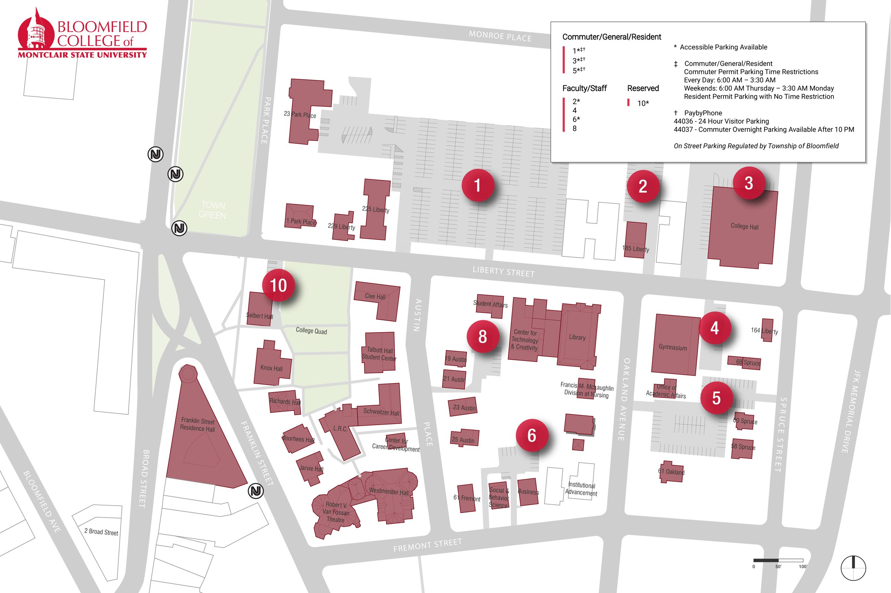

Demo only. Building names and locations come from the 2026 campus parking map. Then and Did you know entries are drafts from college and university sources, pending verification. Some photos and Today details are still placeholders.

Base map: Bloomfield Campus Parking Map 2026. Lettered pins are tour stops. Numbered red circles are parking lots. The dashed line shows stop order, not an exact walking path.
Tap the photo area to try one of your own pictures. It stays on your phone and is not uploaded. This route has not been checked as an accessible path.